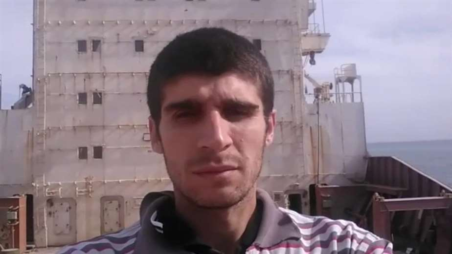

El marinero que pudo abandonar su barco tras pasar 4 años atrapado en él
Mohammed Aisha se vio obligado a vivir en un carguero abandonado durante cuatro años, parte del tiempo completamente solo.
El destino de Mohammed Aisha quedó unido al barco MV Aman el 5 de mayo de 2017.
Ese año la Justicia egipcia lo nombró guardián legal de esta embarcación que se había quedado a la deriva.
Eso significó no poder abandonar el carguero más que para ir a buscar agua o comida a la orilla.
Cuatro años después de vivir completamente solo allí, las autoridades han decidido liberarlo de la responsabilidad y permitirle volver a su país, Siria.
Su mensaje de texto, enviado desde el avión en la pista del aeropuerto de El Cairo, fue breve.
"Siento alivio. Alegría."
Y luego llegó un mensaje de voz.
"¿Cómo me siento? Como si finalmente saliera de la cárcel. Por fin me reuniré con mi familia. Los veré de nuevo".